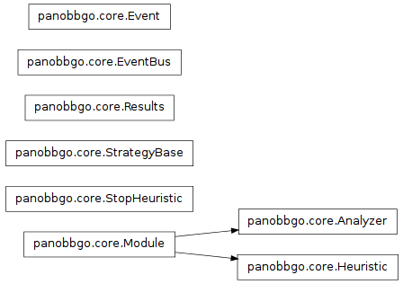

Core
This is the core part. It contains the essential components
and base-classes for the modules:
- Results: Database of all results, with some rudimentary queries and statistics.
- EventBus: This is the backbone for communicating between the strategy,
the heuristics and the analyzers.
- “abstract” base-classes for the modules
- and most importantly, the StrategyBase which holds everything together and
subclasses in strategies implement the actual strategies.

-
class panobbgo.core.Analyzer(name=None)[source]
Bases: panobbgo.core.Module
Abstract parent class for all types of analyzers.
-
class panobbgo.core.Event(**kwargs)[source]
Bases: object
This class holds the data for one single EventBus event.
-
class panobbgo.core.EventBus[source]
Bases: object
This event bus is used to publish and send events.
E.g. it is used to send information like “new best point”
to all subscribing heuristics.
-
keys[source]
List of all keys where you can send an Event to.
-
publish(key, event=None, terminate=False, **kwargs)[source]
Publishes a new Event to all subscribers,
who listen to the given key.
It is either possible to send an existing event or to create an event
object on the fly with the given **kwargs.
Args:
-
re = <module 're' from '/usr/lib/python2.7/re.pyc'>
-
register(target)[source]
Registers a given target for this EventBus instance.
It needs to have suitable on_<key> methods.
For each of them, a Thread is spawn as a daemon.
-
subscribe(key, target)[source]
Called by register().
-
unsubscribe(key, target)[source]
Args:
- if key is None, the target is removed from all keys.
-
class panobbgo.core.Heuristic(name=None, cap=None)[source]
Bases: panobbgo.core.Module
This is the “abstract” parent class for all types of point generating classes,
which we call collectively “Heuristics”.
Such a heuristic is capable of the following:
- They can be parameterized by passing in optional arguments in the constructor.
This should be reflected in the name!
- The EventBus spawns a thread for each on_* method
and calls them when a corresponding Event occurs.
- Of course, they are capable of storing their state in the instance.
This is also the way of how information is shared between those threads.
- The main purpose of a heuristic is to emit new search points
by calling either emit() or returning a list of points.
The datatype must be numpy.ndarray of
floats.
- Additionally, the can get hold of other heuristics or anayzers via the strategy instance.
- The EventBus inside this strategy instance allows them to publish their
own events, too. This can be used to signal related heuristics something
or to queue up tasks for itself.
-
active[source]
This is queried by the strategy to determine, if it should still consider it.
This is the case, iff there is still something in its output queue
or if there is a chance that there will be something in the future (at least
one thread is running).
-
clear_output()[source]
-
emit(points)[source]
This is used to send out new search points for evaluation.
Args:
- points: Either a numpy.ndarray of float64 or preferrably a list of them.
-
get_points(limit=None)[source]
this drains the output Queue until limit
elements are removed or the Queue is empty.
For each actually emitted point,
the performance value is discounted (i.e. “punishment” or “energy
consumption”)
-
class panobbgo.core.Module(name=None)[source]
Bases: object
“Abstract” parent class for various panobbgo modules, e.g.
Heuristic and Analyzer.
-
eventbus[source]
-
name[source]
The module’s name.
Note
It should be unique, which is important for
parameterized heuristics or analyzers!
-
problem[source]
-
results[source]
-
strategy[source]
-
ui[source]
-
class panobbgo.core.Results(strategy)[source]
Bases: object
A very simple database of results with a notificaton for new results.
The new results are fed directly by the StrategyBase, outside of the
EventBus.
Note
Later on, maybe this will be a cool actual database which allows to
persistenly store past evaluations for a given problem.
This would allow resuming and further a-posteriory analysis.
-
add_results(new_results)[source]
Add one single or a list of new @Result objects.
Then, publish a new_result event.
-
info()[source]
-
n_best(n)[source]
-
exception panobbgo.core.StopHeuristic(msg='stopped')[source]
Bases: exceptions.Exception
Indicates the heuristic has finished and should be ignored/removed.
Args:
- msg: a custom message, will be visible in the log. (default: “stopped”)
-
class panobbgo.core.StrategyBase(problem, heurs)[source]
Bases: object
This abstract BaseStrategy is the parent class of all Strategies.
Use it this way:
- Subclass it, write your optional initializer, afterwards call the initializer
of this class (it will start its the main loop).
- Overwrite the execute(), which returns a list of new search points
(by requesting them from the heuristics via the
get_points() method) and might
also emit Events.
This execute method will be called repeatedly as long as there are less than the
given maximum number of search points evaluated.
-
PROBLEM_KEY = 'problem'
-
add_analyzer(a)[source]
-
add_heuristic(h)[source]
-
analyzer(who)[source]
-
avg_time_per_task[source]
-
best[source]
-
execute()[source]
Overwrite this method when you extend this base strategy.
-
heuristic(who)[source]
-
heuristics[source]
-
info()[source]
-
init_module(module)[source]
StrategyBase calls this method.
-
name[source]
-
run()[source]
-
time_cpu[source]
effective cpu time in seconds
-
time_start_str[source]
-
time_wall[source]
wall time in seconds